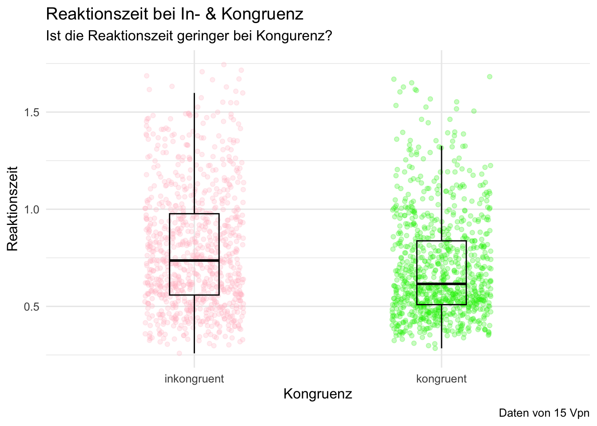
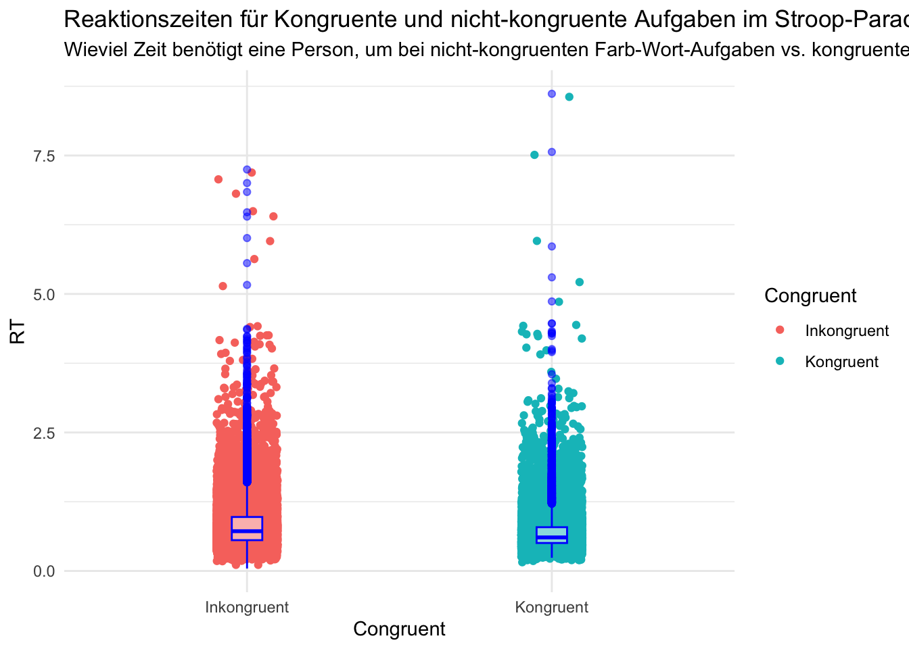
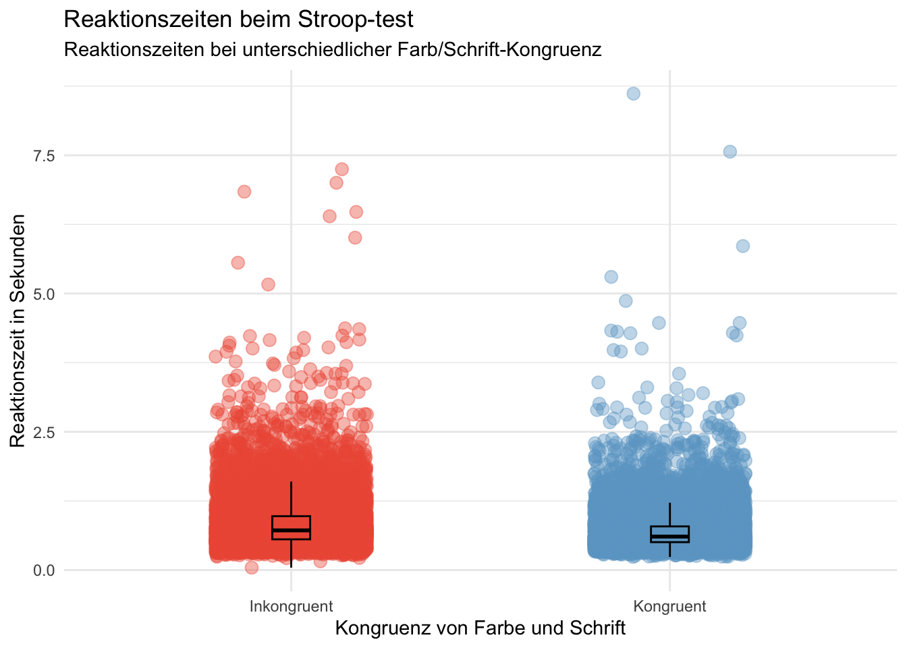
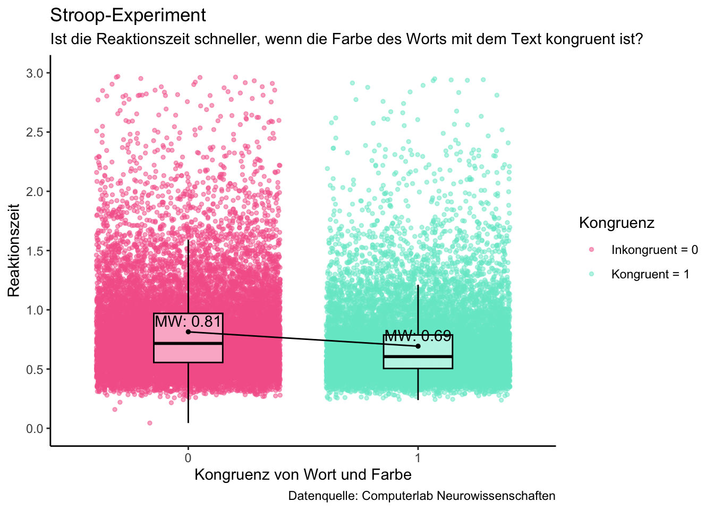
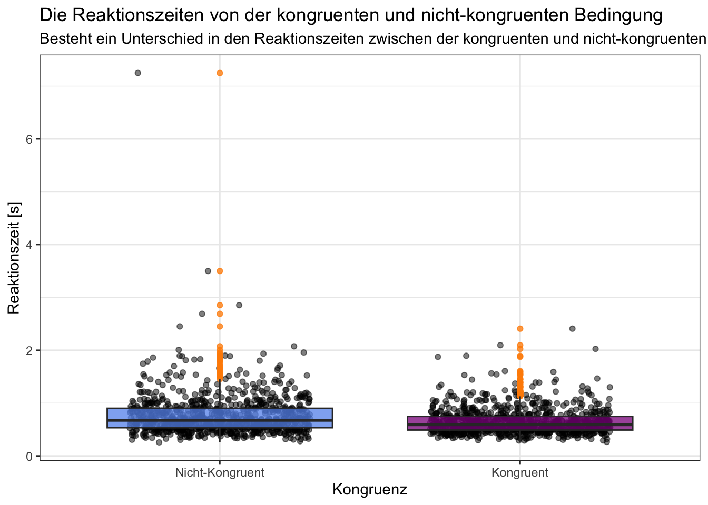
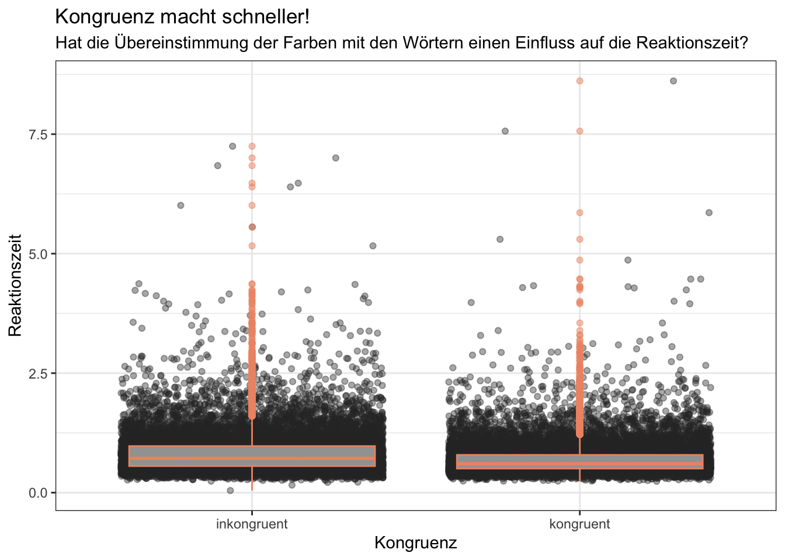
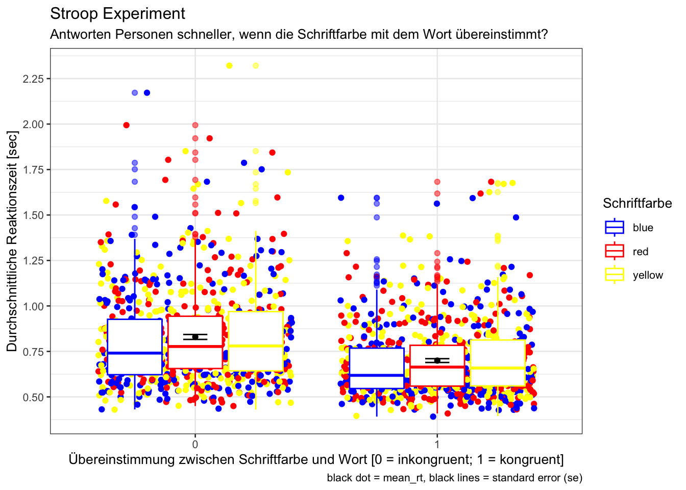

Plot Gallery - Mo
Daniel Fitze ![]()
Gerda Wyssen
# Beginnen Sie hier mit Ihrem Code:
#d <- as.data.frame()
# Plot erstellen
# Rohdaten plotten
plot_rohdaten <- ggplot(d, aes(x = trial, y = rt, color = congruent)) +
geom_point() +
labs(title = "Stroop Aufgabe",
subtitle = "Vergleich der Reaktionszeiten nach Bedingung",
x = "Versuch",
y = "Reaktionszeit (s)",
color = "Kongruenz",
caption = "dataset_stroop_clean") +
theme_minimal()
# Zusammenfassendes Maß (Boxplot) erstellen
plot_zusammenfassung <- ggplot(d, aes(x = as.factor(congruent), y = rt, fill = as.factor(congruent))) +
geom_boxplot() +
labs(title = "Stroop Aufgabe",
subtitle = "Verteilung der Reaktionszeiten nach Kongruenz",
x = "Kongruenz",
y = "Reaktionszeit (s)",
fill = "Kongruenz",
caption = "dataset_stroop_clean") +
theme_minimal()
# Optional: Facets verwenden, um nach weiteren Variablen zu unterscheiden
# Hier müsstest du die entsprechenden Facets anpassen und deine Daten entsprechend strukturieren
plot_facets <- ggplot(d, aes(x = trial, y = rt, color = congruent)) +
geom_point() +
facet_wrap(~word) +
labs(title = "Stroop Aufgabe",
subtitle = "Vergleich der Reaktionszeiten nach Bedingung und Worttyp",
x = "Versuch",
y = "Reaktionszeit (s)",
color = "Kongruenz",
caption = "dataset_stroop_clean") +
theme_minimal()
# print (d)
# Optional: Speichern des Plots als Bild
#ggsave("stroop_plot.png", plot_rohdaten, width = 8, height = 6, units = "in")
# Plots anzeigen
#plot_rohdaten
#plot_zusammenfassung
#plot_facets
# Plot erstellen übereinander
plot_all <- ggplot(d, aes(x = trial, y = rt)) +
geom_point(aes(color = factor(congruent)), position = position_jitter(width = 0.2), alpha = 0.5) + # Rohdaten anzeigen
geom_boxplot(aes(fill = factor(congruent)), alpha = 0.8, outlier.shape = NA) + # Zusammenfassende Boxplots
labs(title = "Stroop Task: Reaktionszeiten",
subtitle = "Vergleich der Reaktionszeiten nach Bedingung",
x = "Versuch",
y = "Reaktionszeit (in Sekunden)",
color = "Kongruenz",
fill = "Kongruenz",
caption = "dataset_stroop_clean") +
theme_minimal()
# Plot anzeigen
print(plot_all)
# Beginnen Sie hier mit Ihrem Code:
d <- d |>
filter(rt > 0.1 & rt < 1.75) |>
select(id, trial, congruent, rt)|>
mutate (congruent = as.factor(congruent)) |>
mutate(congruent = case_match(congruent,
"0" ~ "inkongruent",
"1" ~ "kongruent"))
p_boxplot <- d |>
filter(id %in% c("sub-10318869", "sub-1106725", "sub-113945", "sub-11959984",
"sub-12224605", "sub-12242654", "sub-13366559", "sub-13662910",
"sub-13937586", "sub-13771505", "sub-73916681", "sub-74487595",
"sub-75143607", "sub-89031395", "sub-90289188")) |>
ggplot(aes(x = congruent, y = rt, color = congruent)) +
geom_jitter(alpha = 0.25, width = 0.2) +
geom_boxplot(alpha = 0, width = 0.2, color = "black") +
scale_color_manual(values = c(kongruent = "green2",
inkongruent = "pink")) +
theme_minimal(base_size = 12) +
theme(legend.position = "none") +
labs(title = "Reaktionszeit bei In- & Kongruenz",
subtitle = "Ist die Reaktionszeit geringer bei Kongurenz?",
x = "Kongruenz",
y = "Reaktionszeit",
caption = "Daten von 15 Vpn" )
p_boxplot#Fragestellung: Zeigt sich ein grösserer Lerneffekt (der sich in einer schnelleren Reaktionszeit wiederspiegelt) bei inkongruenten im Verlgeich zu kongruenten Items über die Trials hinweg?
#Erstellen eines Datensatzes mit den für die Fragestellung relevanten Variablen ausgewählt werden und Gruppieren der Trials in 6 Trialgruppen
d_grouped <- d %>%
na.omit() %>%
group_by(trial) %>%
reframe(id,
rt,
congruent = congruent == 1,
trial_group = case_when(
trial >= 1 & trial <= 20 ~ "Trials 1-20",
trial >= 21 & trial <= 40 ~ "Trials 21-40",
trial >= 41 & trial <= 60 ~ "Trials 41-60",
trial >= 61 & trial <= 80 ~ "Trials 61-80",
trial >= 81 & trial <= 100 ~ "Trials 81-100",
trial >= 101 & trial <= 120 ~ "Trials 101-120"
)) %>%
mutate(trial_group = factor(trial_group, levels = c("Trials 1-20", "Trials 21-40", "Trials 41-60", "Trials 61-80", "Trials 81-100", "Trials 101-120")))
#Erstellen einer Variable die den Gesammittelwert der Variable Reaktionszeit beinhaltet
overall_mean <- mean(d$rt, na.rm = TRUE)
#Erstellen eines Datensatzes in dem zufällig Trials einzelner Teilnehmer:innen ausgewählt und gespeichert werden
random_participants <- d_grouped %>%
filter(rt <= 5.0) %>%
group_by(trial_group) %>%
sample_n(300, replace = FALSE)
#Erstellen des Plots der die genannte Fragestellung beantwortet
p = d_grouped %>%
filter(rt <= 5.0) %>%
ggplot(mapping = aes(x = trial_group,
y = rt,
fill = congruent)) +
geom_boxplot(color = "black") +
geom_hline(yintercept = overall_mean, linetype = "dashed", color = "blue", size = 0.8) +
geom_jitter(data = random_participants, aes(x = trial_group, y = rt, color = congruent, alpha = 0.3)) +
labs(title = "Reaktionszeiten von kongruenten und inkongruenten Items",
subtitle = "Zeigt sich ein grösserer Lerneffekt bei inkongruenten im Vergleich zu kongruenten Items über die Trials hinweg?",
x = "Trialgruppen",
y = "Reaktionszeit in s",
fill = "kongruent",
color = "kongruent") +
theme_light()
p
# Beginnen Sie hier mit Ihrem Code:
# daten vorbereiten
d_clean <- d %>%
drop_na() %>%
mutate(across(where(is.character),
as.factor)) %>% # aller text zu factors
mutate(corr_fct = as.factor(corr),
congr_fct = as.factor(congruent)) # neue vars mit corr und congr als fct
# plot
d_clean %>%
filter(corr_fct == 1 & rt < 1.5) %>%
ggplot(aes(
x = color,
y = rt,
color = color,
fill = color)) +
geom_jitter(alpha = 0.3, width = 0.2, size = 0.5) +
geom_violin(alpha = 0.3, color = "white") +
geom_boxplot(alpha = 0.1, width = 0.2, color = "white") +
theme_minimal() +
labs(title = "BLAU MACHT SCHNELL",
subtitle = "Stoop-Test: Unterscheiden sich die Reaktionszeiten je nach Farbe des Stimulusmaterials?
(Verwendete Daten: Nur kongruente Stimuluspaare und korrekte Antworten)",
x = "Farbe Stimulusmaterial",
y = "Reaktionszeit (s)",
caption = "Konklusion: Ich streiche mein Studierzimmer blau") +
theme(plot.title = element_text(face = "bold")) +
scale_color_manual(values = c("blue" = "royalblue3",
"red"="red3",
"yellow"="gold3")) +
scale_fill_manual(values = c("blue" = "royalblue3",
"red"="red3",
"yellow"="gold3"))
### links:
# https://www.statology.org/color-by-factor-ggplot2/
# https://sape.inf.usi.ch/quick-reference/ggplot2/colour
# https://kogpsy.github.io/neuroscicomplabFS24/pages/chapters/data_visualization_1.html
# https://kogpsy.github.io/neuroscicomplabFS24/pages/chapters/data_visualization_2.html
# Beginnen Sie hier mit Ihrem Code:
d <- d |>
filter(rt > 0.09 & rt < 15)
d_color_rt <- d |>
group_by(id, color) |>
summarise(
mean_rt = mean(rt)
)
p = d_color_rt |>
ggplot(aes(x = color, y = mean_rt, color = color)) +
geom_jitter(size = 1.5, alpha = 0.4,
width = 0.2, height = 0) +
geom_boxplot(width = 0.1, alpha = 0, color = "black") +
scale_color_manual(values = c(blue = "blue2",
red = "red1",
yellow = "yellow1")) +
labs(title = "Uebung 3",
subtitle = "Unterscheidet sich die Reaktionszeit der Probanden, je nach Farbe die präsentiert wird?") +
theme_minimal(base_size = 12) +
theme(legend.position = "none")
p# Beginnen Sie hier mit Ihrem Code:
# library(ggplot2)
# Datensatz anschauen
# glimpse(d)
# unique(d$color)
d_congruent <- d %>%
mutate(congruent = as.factor(congruent))%>%
filter(rt < 4 & rt > 0.1)
d_rt_summary <- d_congruent %>%
summarise(mean_rt = mean(rt),
sd_rt = sd(rt))
# glimpse(d_rt_summary)
#plot
p = d_congruent |>
ggplot(mapping = aes(x =congruent ,
y = rt, color= congruent)) +
geom_jitter(width = 0.4, alpha= 0.09) +
scale_y_continuous(breaks = seq(0, 4, by = 0.5))+
geom_hline(yintercept = d_rt_summary$mean_rt, linetype = "dashed", color = "red", linewidth= 1)+
scale_color_manual(values= c("darkviolet", "darkblue"))+
labs(title = "Geringere Reaktionszeit in der kongruenten Bedingungen",
subtitle = "Unterscheidet sich die Reaktionszeit zwischen der kongruenten und inkongruenten Bedinung?",
x = "inkongruent vs. kongruent",
y = "Reaktionszeit in Sekunden") +
theme_classic() +
guides(color = FALSE)
p
# Beginnen Sie hier mit Ihrem Code:
#Libraries laden
library(patchwork)
library(naniar)
library(psych)
library(ggpubr)
#Daten vorverarbeiten
d_factor <- d %>%
mutate(across(where(is.character), as.factor))
d_filtered <- d_factor %>%
filter(rt > 0.09 & rt < 15)
d_acc_rt_trial <- d_filtered %>%
group_by(congruent, trial) %>%
summarise(
N = n(),
ncorrect = sum(corr),
accuracy = mean(corr),
median_rt = median(rt)) %>%
mutate(median_rt = median_rt*1000) %>%
filter(accuracy > 0.5)
#Bedingungen in Faktor umwandeln und Levels umbenennen
d_acc_rt_trial$congruent_string <- factor(d_acc_rt_trial$congruent, levels = c("0", "1"))
levels(d_acc_rt_trial$congruent_string) <- list(inkongruent = "0", kongruent = "1")
#Plots erstellen
my_comparisonsp1 <- list(c("kongruent", "inkongruent"))
p1 <- d_acc_rt_trial %>%
ggplot(aes(x = congruent_string, y= accuracy, color = congruent_string)) +
geom_jitter(size = 2.5, alpha = 0.4,
width = 0.2, height = 0) +
geom_boxplot(width = 0.1, alpha = 0, color = "black") +
labs(x = "Bedingung",
y = "Genauigkeit",
title = "Mittlere Genauigkeit pro Bedingung",
subtitle = "Unterscheidet sich die Genauigkeit\nzwischen den Bedingungen?") +
theme_classic(base_size = 12) +
theme(legend.position = "none") +
stat_compare_means(comparisons = my_comparisonsp1, label = "p.signif", method = "wilcox.test", paired = TRUE, ref.group = "inkongruent")
my_comparisonsp2 <- list(c("kongruent", "inkongruent"))
p2 <- d_acc_rt_trial %>%
ggplot(aes(x = congruent_string, y= median_rt, color = congruent_string)) +
geom_jitter(size = 2.5, alpha = 0.4,
width = 0.2, height = 0) +
geom_boxplot(width = 0.1, alpha = 0, color = "black") +
labs(x = "Bedingung",
y = "Mittlere Reaktionszeit [ms]",
title = "Mittlere Reaktionszeit pro Bedingung",
subtitle = "Unterscheidet sich die mittlere Reaktionszeit\nzwischen den Bedingungen?") +
theme_classic(base_size = 12) +
theme(legend.position = "none") +
stat_compare_means(comparisons = my_comparisonsp1, label = "p.signif", method = "wilcox.test", paired = TRUE, ref.group = "inkongruent")
p1 + p2
# Beginnen Sie hier mit Ihrem Code:
p = d |>
ggplot(aes(x = color, y = rt, color = color)) +
geom_jitter(width = 0.2, size = 0.5, alpha = 0.25) +
geom_boxplot(width = 0.4, alpha = 0, color = "black") +
scale_color_manual(values = c(blue = "blue",
red = "red",
yellow = "yellow")) +
theme_minimal() +
labs(x = "color of presented word",
y = "reaction time [s]",
title = "Reaction times per color",
subtitle = "Were the reaction times different for the 3 colors presented?")
p
# Beginnen Sie hier mit Ihrem Code:
# Anmerkung: Habe noch versucht, Signifikanzwerte etc. anzeigen zu lassen (einfach aus Neugier) - vielleicht seht ihr das besser, ob es funktioniert hat.
library(ggsignif)
# Variable "congruent" in einen Faktor mit Labels "Inkongruent" bei 0, "Kongruent" bei 1
d$congruent <- factor(d$congruent, levels = c(0,1), labels = c("Inkongruent", "Kongruent"))
# Durchführung eines t-Tests
t_test_result <- t.test(rt ~ congruent, data = d, var.equal = FALSE)
# Extrahieren des p-Werts aus dem Testergebnis
p_value <- t_test_result$p.value
# Plotting mit ggplot
p <- ggplot(data = d,
mapping = aes(x = congruent, y = rt, color = congruent)) +
geom_jitter(height = 0.1, width = 0.1) +
geom_boxplot(width = 0.1, color = "blue", fill = "white", alpha = 0.5) + # Boxplot über den Dichteplot legen
labs(title = "Reaktionszeiten für Kongruente und nicht-kongruente Aufgaben im Stroop-Paradigma",
subtitle = "Wieviel Zeit benötigt eine Person, um bei nicht-kongruenten Farb-Wort-Aufgaben vs. kongruenten Farb-Wort-Aufgaben zu inhibieren?",
x = "Congruent",
y = "RT",
color = "Congruent") +
theme_minimal()
# Hinzufügen der Signifikanzanzeige
p <- p + geom_signif(comparisons = list(c("Incongruent", "Congruent")),
map_signif_level = TRUE,
textsize = 3,
vjust = 0.5,
manual = F) +
annotate("text", x = 1.5, y = max(d$rt), label = ifelse(p_value < 0.05, "*", ""), size = 6)
# Plot anschauen
p
# Ursprüngliche Aufgabenstellung: Beides, Rohdaten UND mind. 1 zusammenfassendes Mass(z.B. Mittelwert mit Standardabweichungen, Box-/Violinplot, etc.). TIPP: Mehrere Geoms können übereinander gelegt werden.
# Mind. 2 unterschiedliche Farben.
# Beschriftungen: Titel, Subtitel, Achsenbeschriftungen, (optional: Captions)
# Der Subtitel beinhaltet die Frage, welche der Plot beantwortet.
# Ein Theme verwenden.
# Optional: Facets verwenden.
# Beginnen Sie hier mit Ihrem Code:
t_test_resultate <- t.test(rt ~ congruent, data = d)
p_wert <- t_test_resultate$p.value
signifikanz_label <- ifelse(p_wert < 0.05, "Es besteht eine Signifikante Interaktion (p < 0.05) zwischen den Kongruenbedingugen.", "Es besteht keine signifikante Interaktion (p >= 0.05) zwischen den Kongruenzbedingungen.")
p = d %>%
ggplot(aes(x = as.factor(congruent), y = rt, fill = congruent)) +
geom_violin(position = 'dodge', alpha = 0.5, color = "red", fill = "orange") +
geom_point(size = 0.5, alpha = 0.5, color = "red") +
stat_summary(fun = mean, geom = "point", size = 3, color = "black") +
stat_summary(fun = mean, geom = "line", aes(group = 1), linetype = "dashed", color = "black") +
stat_summary(fun = mean, geom = "text", aes(label = paste(round(..y.., digits = 2))), vjust = -0.5, color = "black") +
labs(
title = "Stroop Task: Reaktionszeit nach Kongruenz",
subtitle = "Gibt es Unterschiede in den Reaktionszeiten zwischen den Kongruenzbedingungen?",
x = "Kongruenz",
y = "Reaktionszeit (ms)",
caption = signifikanz_label) +
theme_grey() +
theme(legend.position = "none") +
scale_x_discrete(
breaks = c(0, 1),
labels = c("Nicht Kongruent", "Kongruent")
)
p
# Zu langsame und zu schnelle herausfiltern
d <- d |>
filter(rt > 0.09 & rt < 15)
# Daten gruppieren: Anzahl Trials, Accuracy und mittlere Reaktionszeit berechnen
acc_rt_individual <- d |>
group_by(id, congruent) |>
summarise(
N = n(),
ncorrect = sum(corr),
accuracy = mean(corr),
median_rt = median(rt)
)
# Datensatz mit allen Ids, welche zuwenig Trials hatten
n_exclusions <- acc_rt_individual |>
filter(N < 40)
# Aus dem Hauptdatensatz diese Ids ausschliessen
d <- d |>
filter(!id %in% n_exclusions$id)
# Check
d_acc_rt_individual <- d |>
group_by(id, congruent) |>
summarise(
N = n(),
ncorrect = sum(corr),
accuracy = mean(corr),
median_rt = median(rt)
)
# Gesamtmittelwert und Mittelwerte Reaktionszeit berechnen
overall_mean_rt <- mean(d$rt)
avg_rt_congruent <- aggregate(rt ~ trial, data = d[d$congruent == 1, ], FUN = mean)
avg_rt_incongruent <- aggregate(rt ~ trial, data = d[d$congruent == 0, ], FUN = mean)
# Plot erstellen
p <- d |>
ggplot(aes(x = trial, y = rt, color = factor(congruent))) +
geom_line() +
geom_line(data = avg_rt_congruent, aes(y = rt, color = "Kongruent")) +
geom_line(data = avg_rt_incongruent, aes(y = rt, color = "Inkongruent")) +
geom_hline(yintercept = overall_mean_rt, linetype = "solid", color = "black") +
labs(title = "Stroop-Experiment",
subtitle = "Zeigen die Reaktionszeiten für kongruente und inkongruente Aufgaben eine ähnliche Tendenz im Verlauf der Trials verglichen zur mittleren Reaktionszeit?",
x = "Trial",
y = "Reaktionszeit (ms)") +
scale_color_manual(values = c("violet", "orange", "blue", "red"),
labels = c("Inkongruent", "Kongruent", "Mittlere Inongruenz", "Mittlere Kongruenz"),
name = "Kongruenz") +
facet_wrap(~ factor(congruent, levels = c(0, 1), labels = c("Inkongruent", "Kongruent")), scales = "free", ncol = 1) +
theme_minimal()
print(p)
# Beginnen Sie hier mit Ihrem Code:
d$congruent <- factor(d$congruent, levels = c(0, 1), labels = c("Inkongruent", "Kongruent"))
p <- ggplot(d, aes(x = congruent, y = rt, color = congruent)) +
geom_jitter(size = 3, alpha = 0.4, width = 0.2, height = 0) +
geom_boxplot(width = 0.1, alpha = 0, color = "black") +
scale_color_manual(values = c("Inkongruent" = "tomato2", "Kongruent" = "skyblue3")) +
labs(title = "Reaktionszeiten beim Stroop-test",
subtitle = "Reaktionszeiten bei unterschiedlicher Farb/Schrift-Kongruenz",
x = "Kongruenz von Farbe und Schrift",
y = "Reaktionszeit in Sekunden") +
theme_minimal() +
guides(color = FALSE)
p
# Beginnen Sie hier mit Ihrem Code:
#Frage: Unterscheidet sich die Geschwindigkeit je nach Farbe?
# Daten zusammenfassen und fehlende Werte entfernen
d_summary <- d %>%
filter(!is.na(rt)) %>%
group_by(color) %>%
summarise(mean_rt = mean(rt),
sd_rt = sd(rt)) # Standardabweichung berechnen
# glimpse(d_summary)
#Rohdaten verarbeiten damit nur relevanter Bereich gezeigt wird
d = d %>% filter(rt<1.5)
# Erstellen einer Zuordnung von Farben zu Farben
color_mapping <- c("blue" = "dodgerblue4", "red" = "firebrick", "yellow" = "gold")
# ggplot mit individuellen Farben für jeden Balken, Standardabweichung und Rohdaten
p <- ggplot(d_summary, aes(y = color, x = mean_rt, fill = color)) +
geom_bar(stat = 'identity') +
geom_point(data = d, aes(x = rt, group = color), position = position_jitter(width = 0.2), color = "lightgrey", size = 2.5, alpha = 0.05)+
geom_errorbar(aes(xmin = mean_rt - sd_rt, xmax = mean_rt + sd_rt), width = 0.2)+ # Fehlerbalken für Standardabweichung
geom_text(aes(label = paste("mw =", round(mean_rt, 3)), x = 0.15), vjust = 0, color = "black", size = 3) + # Mittelwert als Zahl in die Balken schreiben
geom_text(aes(label = paste("sd")), vjust = -0.5, color = "black", size = 3)+ # sd beschriften
scale_fill_manual(values = color_mapping) +
labs(title = "Stroop-Test",
subtitle = "Unterscheidet sich die Reaktionsgeschwindigkeit je nach Farbe?",
y = "Farbe",
x = "Durchschnittliche Reaktionszeit in s")+
theme_light() +
theme(legend.position = "none") # Farbskala entfernen
p
# Beginnen Sie hier mit Ihrem Code:
d <- d %>% mutate(congruent = as.factor(congruent))
palette <- c ("#F56598", "#74E8CE")
#Fragestellung: Ist die Reaktionszeit schneller, wenn die Farbe des Worts mit dem Text übereinstimmt?
# glimpse(d)
minigrafik = d |>
ggplot(mapping =
aes(x = congruent,
y = rt,
color = congruent,
fill = congruent)) +
geom_jitter(size= 1,
alpha = 0.5,) +
geom_boxplot(width = 0.3, fill = "white", color ="black", alpha = 0.5, outlier.colour = "black", outlier.shape = NA) +
scale_color_manual(values = palette, name = "Kongruenz", labels = c("Inkongruent = 0", "Kongruent = 1")) +
scale_fill_manual(values = palette) +
# Mittelwert
stat_summary(fun=mean,
geom="point",
shape=19,
size=1,
color="black",
fill="black",
position=position_dodge(width=0.5)) +
# Linie um Mittelwert-Differenz darzustellen
stat_summary(fun=mean,
geom="line",
aes(group=1),
linetype="solid",
color="black",
position=position_dodge(width=0.5)) +
# Mittelwert beschriften
geom_text(aes(label = paste("MW:", round(..y.., 2))),
stat = "summary",
vjust = -0.5,
color = "black",
fill = "black",
position=position_dodge(width=0.5)) +
# Achsenbeschriftung
labs(title = "Stroop-Experiment",
subtitle = "Ist die Reaktionszeit schneller, wenn die Farbe des Worts mit dem Text kongruent ist?",
x = "Kongruenz von Wort und Farbe",
y = "Reaktionszeit",
caption = "Datenquelle: Computerlab Neurowissenschaften") +
# Definiert die Achsenskalierung für die y-Achse
scale_y_continuous(limits = c(0, 3), breaks = seq(0, 3, by = 0.5)) +
guides(fill = FALSE) +
theme_classic()
minigrafik
#ggsave(filename = "grafik_yael_hess.png",
# plot = minigrafik)
d_grouped_and_summarized <- d %>%
group_by(id, congruent) %>%
summarise(
sum_corr = sum(corr),
mean_corr = mean(sum_corr)
)
p = ggplot(data = d_grouped_and_summarized,
aes(x = factor(congruent),
y = mean_corr,
fill = factor(congruent))) +
geom_boxplot() +
geom_point(position = position_jitter(width = 0.2), alpha = 0.5) +
labs(x = "Kongruenz", y = "Anzahl der richtigen Antworten", fill = "Kongruenz") +
scale_fill_manual(values = c("1" = "lightblue", "0" = "lightgreen"),
labels = c("kongruent", "inkongruent")) +
scale_x_discrete(labels = c("1" = "kongruent", "0" = "inkongruent")) + # Ändern der Labels auf der x-Achse
coord_cartesian(ylim = c(40, 65)) + # limitieren der Spannweite der y-Achse zur besseren Übersicht
theme_minimal() +
theme(legend.position = "right") +
ggtitle("Einfluss der Kongruenz auf die Korrektheit der Antwort") + # Titel hinzufügen
labs(subtitle = "Wie unterscheiden sich kongruente Trials von inkongruenten in Bezug auf die Häufigkeit korrekter Antworten?") # Untertitel hinzufügen
p
# Beginnen Sie hier mit Ihrem Code:
d_point <- d %>%
group_by(word, color) %>%
na.omit() %>%
summarize(mean_rt = mean(rt),
accuracy = mean(corr)) %>%
mutate(interaction_word_color = factor(interaction(word, color), levels = c("blau.blue", "rot.red", "gelb.yellow", "gelb.blue", "blau.yellow", "rot.blue", "blau.red", "gelb.red", "rot.yellow")))
d_jitter <- d %>%
group_by(word, color) %>%
na.omit() %>%
summarize(rt = rt,
accuracy = mean(corr)) %>%
mutate(interaction_word_color = factor(interaction(word, color), levels = c("blau.blue", "rot.red", "gelb.yellow", "gelb.blue", "blau.yellow", "rot.blue", "blau.red", "gelb.red", "rot.yellow")))
d_boxplot <- d %>%
group_by(word, color) %>%
na.omit() %>%
summarize(rt = rt,
accuracy = mean(corr)) %>%
mutate(interaction_word_color = factor(interaction(word, color), levels = c("blau.blue", "rot.red", "gelb.yellow", "gelb.blue", "blau.yellow", "rot.blue", "blau.red", "gelb.red", "rot.yellow")))
p <- d %>%
ggplot() +
geom_point(data = d_point, mapping = aes(x = accuracy, y = mean_rt, color = interaction_word_color), size = 3) +
geom_jitter(data = d_jitter, mapping = aes(x = accuracy, y = rt, color = interaction_word_color), alpha = 0.016) +
geom_boxplot(data = d_boxplot, mapping = aes(x = accuracy, y = rt, color = interaction_word_color), alpha = 0.02)+
scale_color_manual(values = c("blue3", "red3", "gold", "darkolivegreen3", "chartreuse4", "darkorchid1", "blueviolet", "orange", "darkorange"), name = "Wort-Farbe-Kombination", guide_legend(override.aes = list(size = 5))) +
labs(y = "Mittlere Reaktionszeit und Boxplots", x = "Accuracy", title = "Accuracy und mittlere Reaktionszeit für jede Wort-Farbe Kombination", subtitle = "Unterschiede in accuracy und mittlerer Rektionszeit zwischen verschiedenen Wort-Farbe Kombinationen \n sowie Verteilung der mittleren Reaktionszeit für jede Wort-Farbe Kombination") +
theme_minimal() +
theme(panel.grid.major = element_blank(),
panel.grid.minor = element_blank(),
panel.border = element_blank(),
axis.line = element_line(size = 0.5, color = "black"),
plot.title = element_text(size = 16)) +
theme(panel.grid = element_blank()) +
scale_x_continuous(limits = c(0.93, 1), breaks = seq(0.93, 1.02, 0.015)) +
scale_y_continuous(limits = c(0.15, 0.85), breaks = seq(0.15, 0.85, 0.05))
p
# Beginnen Sie hier mit Ihrem Code:
# Rohdaten und Zusammenfassung
p <- d %>%
ggplot(aes(x = as.factor(congruent), y = rt, fill = as.factor(congruent))) +
geom_jitter( width = 0.2, alpha = 0.5, size = 2, color = "lightgrey") +
stat_summary(fun = mean, geom = "point", shape = 23, size = 3, position = position_dodge(width = 0.75)) +
stat_summary(fun = mean, geom = "errorbar", position = position_dodge(width = 0.75), width = 0.3, color = "black", size = 1.5) +
geom_line(stat = "summary", aes(group = 1), position = position_dodge(width = 0.75), linetype = "dashed") +
geom_text(stat = "summary", aes(label = round(..y.., 2)), vjust = -1, position = position_dodge(width = 0.8)) +
labs(
title = "Durchschnittliche Reaktionszeiten zwischen den Bedingungen",
subtitle = "Unterschiede in den durchschnittlichen Reaktionszeiten zwischen kongruent und inkongruent",
x = "Kongruenz",
y = "Durchschnittliche Reaktionszeit (in ms)",
fill = "Kongruenz"
) +
scale_fill_manual(values = c("magenta","blue")) +
scale_x_discrete(labels = c("Nicht kongruent","Kongruent")) +
theme_minimal()
print(p)# Beginnen Sie hier mit Ihrem Code:
#Frage: Unterscheidet sich die Geschwindigkeit je nach Farbe?
# Daten zusammenfassen und fehlende Werte entfernen
d_summary <- d %>%
filter(!is.na(rt)) %>%
group_by(color) %>%
summarise(mean_rt = mean(rt),
sd_rt = sd(rt))
# glimpse(d_summary)
#Rohdaten verarbeiten damit nur ein reduzierter Bereich gezeigt wird (dort wo MW & SD liegen)
d= d %>%
filter(rt<1.2)
# Erstellen einer Zuordnung von Farben zu Farben
color_mapping <- c("blue" = "lightskyblue", "red" = "lightcoral", "yellow" = "lightgoldenrod1")
# ggplot mit MW,SD & individuellen Datenpunkten
p<- ggplot(d_summary, aes(x = color, y = mean_rt, fill = color)) +
geom_bar(stat = 'identity') +
geom_point(data = d, aes(y = rt, group = color), position = position_jitter(width = 0.2), color = "lightgrey", size = 2.5, alpha=0.05)+
geom_errorbar(aes(ymin = mean_rt - sd_rt, ymax = mean_rt + sd_rt), width = 0.2)+ # errorbars=sd
scale_fill_manual(values = color_mapping) +
labs(title = "Forschungsfrage",
subtitle = "Unterscheidet sich die Reaktionsgeschwindigkeit je nach Farbe?",
x = "Farbe",
y = "Durchschnittliche Reaktionszeit [ms]",
caption= "Errorbar= Standardabweichung")+
theme_linedraw()
p
# Beginnen Sie hier mit Ihrem Code:
# Fragestellung:
# Ist die Reaktionszeit der Versuchspersonen länger bei inkongruenten Items im Vergleich zu kongruenten Items?
# Daten bereinigen und Überblick verschaffen:
d_clean <- d %>%
filter(!is.na(rt))
summary_data <- d_clean %>%
group_by(congruent) %>%
summarize(median_rt = median(rt),
mean_rt = mean(rt),
sd_rt = sd(rt))
# Anzeigen der summary
# summary_data
# congruent zu Faktor umwandeln (inkongruent = 0; kongruent = 1)
d_final <- d_clean %>%
mutate(congruent = factor(congruent))
# Plot erstellen
p <- ggplot(d_final, aes(x = congruent, y = rt, fill = congruent)) +
geom_jitter(width = 0.25, alpha = 0.6, color = "#000000", shape = 21, size = 3, stroke = 0.4) +
geom_boxplot(alpha = 0.8) +
labs(title = "Reaktionszeiten nach Kongruenz im Stroop Task",
subtitle = "Ist die Reaktionszeit der Versuchspersonen länger bei inkongruenten Items im Vergleich zu kongruenten Items?",
x = "Kongruenz",
y = "Reaktionszeit [s]",
fill = "Kongruenz",
caption = "Neurowissenschaft Computerlab - Stroop Task - Universität Bern") +
scale_fill_manual(values = c("#9bcd9b", "#68829E"), labels = c("inkongruent", "kongruent")) +
scale_x_discrete(labels = c("inkongruent", "kongruent")) +
theme_bw()
# Plot anzeigen
p
# Beginnen Sie hier mit Ihrem Code:
# Fragestellung: Reaktionszeit bei kongruenten oder bei inkroguenten Stimuli + mean von rt in Form von Linie einfügen zum Vergleich
# glimpse(d)
#Variable congruent in Faktor umrechnen weil sonst alle Werte möglich zwischen 0 & 1
d1 <- d %>%
mutate(congruent = as.factor(congruent)) %>%
filter(rt < 4 & rt > 0.1)
#Mittelwert von rt bilden um diesen als Vergleich in den plot einzufügen
d2 <- d1 %>%
summarise(mean_rt = mean(rt),
sd_rt = sd(rt))
#Plot
p = d1 %>%
ggplot(mapping = aes(x = congruent, y = rt, color = congruent)) +
scale_y_continuous(breaks = seq(0, 4, by = 0.5)) +
geom_jitter(width = 0.35, alpha = 0.1) +
geom_hline(yintercept = d2$mean_rt, linetype = "dashed", color = "black", linewidth = 0.8) +
scale_color_manual(values = c("darkgreen", "darkorange")) +
labs(title = "Kongruente Stimuli gehen mit einer kürzeren Reaktionszeit einher",
subtitle = "Weist die kongruente Bedingung schnellere Reaktionszeiten auf als die inkongruente?",
x = "inkongruent vs. kongruent",
y = "Reaktionszeit in Sekunden") +
guides(color = FALSE) #Ausblenden der Farb-Legende
# theme_classic()
p
#glimpse(p)
# Beginnen Sie hier mit Ihrem Code:
# glimpse(d)
#Datensatz gruppiert und summarized anhand der für die Beantwortung der Fragestellung relevanten Daten.
d_grouped_and_summarized_data <- d |>
mutate(corr = as.factor(corr))|>
group_by(id, corr, rt)|>
summarise(
ncorrect = corr,
)
#Plot erstellt anhand des erstellten Datensatzes
p = d_grouped_and_summarized_data |>
filter(rt < 5)|>
ggplot(mapping =
aes(x= ncorrect, y= rt, color = ncorrect)) +
geom_jitter(size= 1, width= 0.4) +
geom_boxplot(width = 0.3, color= "black") +
labs(title = "Reaktionzeiten und falsche Antworten",
subtitle = "Haben die VP schneller geantwortet wenn sie falsch geantwortet haben?",
x="Antwort",
y = "Reaktionszeit")+
scale_x_discrete(labels = c("Falsch", "Richtig"))+
theme_bw()
#Ausgabe des Plots
p# Beginnen Sie hier mit Ihrem Code:
d$congruent <- as.factor(d$congruent) # changing 'congruent' to factor
d_agr <- d %>% filter(corr == 1)%>%
group_by(congruent) %>%
na.omit() %>%
summarise(mean = mean(rt)) # creating a vector with the mean of all correct responses for congruent and incongruent trials.
colors_1 <- c("#5F8575", "#A95C68") # vector for the colors used in geom_hline and geom_histogram
p <- d %>% filter(corr == 1) %>% # filter only correct trials
group_by(congruent) %>% ggplot(aes(x = rt, fill = congruent)) +
geom_histogram( linetype = 0 ,
alpha=0.5,
position = 'identity',
binwidth= 0.04 ) + # binwidth set to 40ms
scale_fill_manual(values=colors_1) +
facet_grid(congruent ~ .) + # seperating the distrbutions, as the overlap is messy.
xlim(0, 2.5) +
geom_vline(data= d_agr , aes(xintercept= mean, color= congruent),
linetype="solid", size = 0.8, color = colors_1) + # a line with colors of distribution for the mean
theme_minimal() + #theme
ggtitle("Reaction-times for correct responses by congruence") + # descriptions
labs(fill = "congruency",
x = "reaction-time in seconds",
y = "responses per 40ms",
subtitle = "Mean and distribution of reaction-times for correct answers, based on word and color congruence (1) or incongruence (0)")
p
# Beginnen Sie hier mit Ihrem Code:
d$congruent <- factor(d$congruent, levels = c(0, 1), labels = c("Nicht-Kongruent", "Kongruent"))
# Zufällige Auswahl von 15 Personen
random_ids <- sample(unique(d$id), 15)
r_d <- d %>%
filter(id %in% random_ids)
p = r_d |>
ggplot(aes(x = congruent, y = rt, fill = congruent)) +
geom_jitter(width = 0.3, alpha = 0.5) +
geom_boxplot(outlier.color = "darkorange", alpha = 0.75) +
scale_fill_manual(values = c("cornflowerblue", "darkmagenta")) +
labs(title = "Die Reaktionszeiten von der kongruenten und nicht-kongruenten Bedingung",
subtitle = "Besteht ein Unterschied in den Reaktionszeiten zwischen der kongruenten und nicht-kongruenten Bedingung?",
x = "Kongruenz",
y = "Reaktionszeit [s]") +
theme_bw() +
theme(legend.position = "none")
print(p)[1] "incongruence" "congruence" # Beginnen Sie hier mit Ihrem Code:
# Datensatz anschauen
# glimpse(d)
#zu Factors machen
d <- mutate(d, color = as.factor(color),
condition = as.factor(congruent))
levels (d$condition) [levels (d$condition) == '0'] <- 'incongruence'
levels (d$condition) [levels (d$condition) == '1'] <- 'congruence'
levels (d$condition)
# glimpse(d)
#Diagnostik: Daten untersuchen
#Fehlende Werte
# install.packages("naniar")
library(naniar)
# naniar::vis_miss(d)
#zu schnelle und zu langsame Antworten ausschliessen
d <- d |>
filter(rt > 0.09 & rt < 15)
#Person mit correct 1 ausschliessen
d <- d |>
filter(id != "sub-80444009")
# Daten gruppieren: Anzahl Trials, Accuracy und mittlere Reaktionszeit berechnen
acc_rt_individual <- d |>
group_by(id, condition, ) |>
summarise(
N = n(),
ncorrect = sum(corr),
accuracy = mean(corr),
median_rt = median(rt)
)
#Plot darstellen
plot1 <- acc_rt_individual %>%
ggplot(aes(x = condition, y = accuracy, color = condition)) +
geom_line(color = "grey40", alpha = 0.5) +
geom_jitter(size = 3, alpha = 0.6,
width = 0, height = 0) +
geom_boxplot(width = 0.1, alpha = 0, color = "black") +
scale_color_manual(values = c(incongruence = "#9467BD",
congruence = "#8FBC8F")) +
labs(x = "Bedingung",
y = "Anteil korrekter Antworten",
title = "Anteil korrekter Antworten \npro Person und Bedingung",
subtitle = "Konnten die VPn die Aufgabe lösen?") +
theme_grey(base_size = 12) +
theme(legend.position = "none")
plot2 <- acc_rt_individual |>
ggplot(aes(x = condition, y = median_rt, color = condition)) +
geom_line(color = "grey40", alpha = 0.5) +
geom_jitter(size = 3, alpha = 0.6,
width = 0, height = 0) +
geom_boxplot(width = 0.1, alpha = 0, color = "black") +
scale_color_manual(values = c(incongruence = "#9467BD",
congruence = "#8FBC8F")) +
labs(x = "Bedingung",
y = "Mittlere Reaktionszeit [s]",
title = "Mittlere Reaktionszeit \npro Person und Bedingung",
subtitle = "Wie schnell waren die VPn?",) +
theme_grey(base_size = 12) +
theme(legend.position = "none")
#Install könnte man auch oben hinschreiben
# install.packages("patchwork")
library(patchwork)
plot1 + plot2
# Beginnen Sie hier mit Ihrem Code:
d$congruent <- as.factor(d$congruent)
levels(d$congruent) <- c("inkongruent", "kongruent")
p = d %>%
ggplot(mapping = aes(congruent,
rt))+
geom_jitter(alpha = 0.4, color = "grey18")+
geom_boxplot(color = "lightsalmon2", alpha = 0.5)+
labs(x = "Kongruenz",
y = "Reaktionszeit",
title = "Kongruenz macht schneller!",
subtitle = "Hat die Übereinstimmung der Farben mit den Wörtern einen Einfluss auf die Reaktionszeit?")+
theme_bw()
p# Beginnen Sie hier mit Ihrem Code:
#alles zu faktoren machen
d <- d |>
mutate(across(where(is.character), as.factor))
#daten anschauen
# d |>
# slice_head(n = 10)
# Daten gruppieren: Anzahl Trials, Accuracy und mittlere Reaktionszeit berechnen
d_acc_rt_individual <- d |>
group_by(id, congruent) |>
summarise(
N = n(),
ncorrect = sum(corr),
accuracy = mean(corr),
median_rt = median(rt)
)
# Plot erstellen
p <- d_acc_rt_individual |>
ggplot(aes(x = congruent, y = median_rt, fill = factor(congruent))) +
geom_boxplot(alpha = .5) +
geom_jitter(alpha = .25, width = .2) +
scale_fill_manual(values = c("0" = "red", "1" = "green")) +
labs(title = "Inhibitionsfähigkeit",
subtitle = "Ist die Reaktionszeit bei der inkongruenten Bedingung verlangsamt?",
x = "Kongruenz [Nein (0), Ja (1)]",
y = "Reaktionszeit [ms]") +
theme_minimal(base_size = 12) +
theme(legend.position = "none")
#Plot ausgeben
p# Beginnen Sie hier mit Ihrem Code:
d_id_color <- d |>
group_by(id, color) |>
summarise(
accuracy = mean(corr),
) |>
filter(accuracy > 0.5)
d_color <- d |>
group_by(color) |>
summarise(
accuracy = mean(corr),
) |>
filter(accuracy > 0.5)
p = d |>
ggplot(data = d_id_color,
mapping = aes(x = color,
y = accuracy,
fill = color)) +
geom_violin(show.legend = FALSE,
alpha = .4) +
scale_fill_manual(values = c(blue = "blue",
yellow = "yellow",
red = "red")) +
theme_minimal() +
geom_point(data = d_color,
show.legend = FALSE,
size = 3) +
labs(title = "Accuracy in Abhängigkeit von der Farbe, in der das Wort präsentiert wurde",
subtitle = "Gibt es einen Unterschied in der Accuracy abhängig von der Farbe, in der das Wort präsentiert wurde?",
x = "Farbe, in der das Wort präsentiert wurde",
y = "Accuracy")
p# Beginnen Sie hier mit Ihrem Code:
# glimpse(d)
#Daten filtern
d <- d |>
filter(rt > 0.09 & rt < 15)
acc_rt_individual <- d |>
group_by(id, congruent) |>
summarise(
N = n(),
ncorrect = sum(corr),
accuracy = mean(corr),
median_rt = median(rt)
)
n_exclusions <- acc_rt_individual |>
filter(N < 40)
d <- d |>
filter(!id%in% n_exclusions$id)
#Vorbereitung für Plot
reaction_time_zf <- d %>%
group_by(congruent) %>%
summarise(mean_reaction_time = mean(rt),
sd_reaction_time = sd(rt),
n = n())
accuracy_zf <- d %>%
group_by(congruent) %>%
summarise(accuracy = mean(corr))
id_zf <- d %>%
group_by(id) %>%
summarise(mean_reaction_time = mean(rt),
mean_accuracy = mean(corr))
#Plot erstellen
p = ggplot(id_zf, aes(x = mean_reaction_time, y = mean_accuracy)) +
geom_point(color="lightslategray") +
geom_smooth(method=lm , color="orange", se=TRUE) +
labs(title = "Stroop-Experiment",
subtitle = "Wie hängen die mittlere Genauigkeit und die mittlere Reaktionszeit zusammen?",
x = "Mittlere Reaktionszeit",
y = "Mittlere Genauigkeit") +
theme_minimal()
p# Beginnen Sie hier mit Ihrem Code:
d <- mutate(d, congruence = as.factor(congruent),
color = as.factor(color))
levels(d$congruence)[levels(d$congruence) == '0'] <- 'incongruent'
levels(d$congruence)[levels(d$congruence) == '1'] <- 'congruent'
# levels(d$congruence)
d_acc_con_trial <- d |>
group_by(congruence, trial) |>
summarise(accuracy = mean(corr))
d_acc_con_trial |>
ggplot(aes(x = trial, y = accuracy, color = congruence)) +
geom_point(size = 2, alpha = 0.8) +
geom_line() +
scale_color_manual(values = c(incongruent = "orange2",
congruent = "mediumpurple3")) +
facet_wrap(~ congruence) +
labs(x = "Trial",
y = "Accuracy",
title = "Accuracy over time",
subtitle = "Do participants benefit from learning effects?")+
geom_smooth(method = lm) +
theme_gray(base_size = 11)
# d_acc_con_trial#Fragestellung: Ist die Person schneller, wenn Farbe und Wort kongruent sind? d.h. Variablen congruent und rt relevant
# glimpse(d)
#Wie viele unterschiedliche Variablen gibt es? -> 8
#Wie heissen die Variablen? -> id, trial, word, color, congruent, resp, corr, rt
#Welches Skalenniveau haben sie? -> congruent, corr, word, color = Nominalskaliert; rt = Verhältnisskalsiert
#Variable congruent als Faktor definieren
d <- d %>% mutate(congruent = as.factor(congruent))
# Code des Plots:
## Plot soll Verteilung der Reaktionszeiten sowie die mittlere Reaktionszeit
## bei den beiden Bedingungen Kongruent = 1 und Kongruent = 0 zeigen
p = d %>%
ggplot(mapping =
aes(x = congruent,
y = rt,
color = congruent,
fill = congruent)) +
geom_jitter(size = 1,
alpha = 0.7) +
geom_boxplot(width = 0.3,
fill = "white",
color ="black",
outlier.color = "black",
outlier.shape = NA,
alpha = 0.5) +
scale_color_manual(values = c("#B4EEB4", "#87CEEB"), name = "Kongruenz",
(labels = c("nicht kongruent", "kongruent"))) +
scale_fill_manual(values = c("#B4EEB4", "#87CEEB")) +
stat_summary(fun = mean,
geom = "point",
shape = 19,
size = 1.5,
color = "black",
fill = "black",
position=position_dodge(width=0.5)) + # Punkt für Mittelwert
stat_summary(fun.data = mean_sdl,
geom = "errorbar",
width = 0.2,
color = "black",
fill = "black",
position = position_dodge(width = 0.5)) + # Standardabweichung
stat_summary(fun = mean,
geom = "line",
aes(group = 1),
linetype = "solid",
size = 0.7,
color = "black",
position = position_dodge(width = 0.8)) + # Linie für Mittelwert-Differenz
geom_text(aes(label = round(..y.., 2)),
stat = "summary",
vjust = -0.5,
color = "black",
fill = "black",
position = position_dodge(width = 0.5)) + # Mittelwert-Beschriftung
labs(title = "Stroop-Experiment",
subtitle = "Ist die Reaktionszeit kürzer, wenn die Farbe des Worts mit dem Text übereinstimmt?",
x = "Kongruenz von Wort und Farbe",
y = "Reaktionszeit") +
scale_y_continuous(limits = c(0, 2.75), breaks = seq(0, 3, by = 0.25)) + # Definiert die Achsenskalierung für die y-Achse
theme_classic() +
guides(fill = FALSE)
p
#ggsave(filename = "thomann_laura_plot.png",
# plot = p)[1] "incongruent" "congruent" # Beginnen Sie hier mit Ihrem Code:
# Datenbereinigung und Faktorenbenennung: Reaktionszeiten unter 100ms und über 10s
# werden ausgeschlossen, Reduktion von 31800 zu 31780 observations
d <- mutate(d, color = as.factor(color),
condition = as.factor(congruent))%>%
filter(rt > 0.09 & rt < 10.01)
# Umbennenung der Faktoren von "Condition"
levels(d$condition)[levels(d$condition) == '0'] <- 'incongruent'
levels(d$condition)[levels(d$condition) == '1'] <- 'congruent'
levels(d$condition)
# Suche nach fehlenden Werten (NA), keine gefunden, daher muss nichts ausgeschlossen werden
d_missings <- d %>% naniar::add_label_missings() %>%
filter(any_missing == "Missing")
# head(d_missings)
#Vorbereitung der Daten mit Accuracy als Mittelwert der Korrekten Antworten und Median_rt als Median der Reaktionszeit
d_acc_rt_trial <- d %>%
group_by(condition, trial) %>%
summarise(
accuracy = mean(corr),
median_rt = median(rt)
)
#Darstellung der Ermüdungseffekte mit einem Line-Plot
ermüdungseffekte <- d_acc_rt_trial %>%
ggplot(aes(x = trial, y = accuracy, color = condition)) +
geom_point(size = 1.5, alpha = 0.6) +
geom_line() +
scale_color_manual(values = c(incongruent = "tomato4",
congruent = "green4")) +
facet_wrap(~ condition) +
labs(x = "Trial",
y = "Accuracy",
title = "Accuracy in the Conditions",
subtitle = "Are there strong effects of fatigue in the two conditions?") +
geom_smooth(method = lm) +
theme_minimal(base_size =10) +
theme(legend.position = "none")
ermüdungseffekte
#Darstellung der Verteilung der Median Reaction Times
histo_rt_and_accuracy <- d_acc_rt_trial %>%
ggplot(aes(x = median_rt, fill = condition)) +
geom_histogram()+
scale_fill_manual(values = c(incongruent = "tomato4",
congruent = "green4")) +
labs(x = "Median Reaction Time [s]",
y = "Count",
title = "Distribution of Median Reaction Times over the conditions",
subtitle = "Was the reaction time shorter in the congruent condition?") +
theme_light()
histo_rt_and_accuracy
#Darstellung der Reaktionszeiten von 3 Teilnehmern über die Konditionen hinweg mit line plot und Trendlinie
rt_of_three_participants <- d %>%
filter(id %in% c("sub-10318869", "sub-1106725", "sub-113945")) %>%
ggplot(aes(x = trial, y = rt, color = condition)) +
geom_smooth(method = "lm", se = FALSE) +
geom_point(alpha = 0.5) +
scale_color_manual(values = c(incongruent = "tomato3",
congruent = "green4")) +
facet_wrap(~ id) +
labs(x = "Trial",
y = "Reaction Time [s]",
title = "Reaction time of 3 participants",
subtitle = "Was the reaction time shorter in the congruent condition for specific participants?") +
theme_light()
# rt_of_three_participants# Beginnen Sie hier mit Ihrem Code:
# Filtern der relevanten Variablen
benötigte_daten <- d[, c("congruent", "rt")]
# Anzeigen der ersten Zeilen des gefilterten Datensatzes
# head(benötigte_daten)
# Umwandlung der Variable 'congruent' in einen Faktor
benötigte_daten$congruent <- factor(benötigte_daten$congruent, levels = c(0, 1), labels = c("incongruent", "congruent"))
# Erstellung des Plots
plot<- ggplot(benötigte_daten, aes(x = congruent, y = rt, fill = congruent, color = congruent)) +
# Hinzufügen der Balken für die Mittelwerte und Standardabweichungen
stat_summary(fun.data = "mean_cl_normal", geom = "bar", size = 1.5, color = "black") +
# Hinzufügen der rohen Daten als Punkte
geom_jitter(width = 0.2) +
# Hinzufügen von Linien für die Standardabweichungen
stat_summary(fun.data = mean_sdl, geom = "errorbar", width = 0.2, size = 1, color = "black") +
# Farben
scale_fill_manual(values = c("congruent" = "blue", "incongruent" = "red")) +
scale_color_manual(values = c("congruent" = "blue", "incongruent" = "red")) +
# Beschriftungen
labs(title = "Stroop-Test: Reaktionszeit nach Bedingung",
subtitle = "Unterschiede in der Reaktionszeit zwischen kongruenten und inkongruenten Bedingungen",
x = "Bedingung", y = "Reaktionszeit (ms)") +
# Design
theme_get()
#anzeigen lassen
print(plot)# Code innerhalb der folgenden 2 Linien darf nicht verändert werden
# --------------------------------------------------------------------------------------
# Beginnen Sie hier mit Ihrem Code:
# glimpse(d)
# Daten nach Farbe gruppieren
d <- d %>%
group_by(color)
# Daten plotten
ggplot(d, aes(x = color, y = rt)) +
geom_boxplot(width = 0.8, outlier.shape = NA) +
labs(title = "Reaktionszeit nach Korrektheit der Antwort und Farbe", subtitle = "Wurden die Antworten bei jeder Farbe gleich schnell gegeben?", x = "Farbe", y = "Reaktionszeit [s]") +
geom_jitter(aes(color = color), width = 0.2) +
coord_cartesian(ylim = c(0, 4.51)) + # rt > 4.51 werden nicht in die Auswertung miteinbezogen
scale_x_discrete(labels = c("blue" = "blau", "red" = "rot", "yellow" = "gelb")) +
scale_color_manual(values = c("blue" = "blue", "red" = "red", "yellow" = "yellow")) +
guides(color = FALSE) +
theme_minimal() +
facet_wrap(~ corr, labeller = labeller(corr = c("0" = "Falsche Antwort", "1" = "Korrekte Antwort")))grouped_and_summarized_data<- d |>
group_by(id,congruent) |>
summarise(mean_rt= mean(rt))
data_kongruent <- filter(grouped_and_summarized_data, congruent == 0)
data_inkongruent <- filter(grouped_and_summarized_data, congruent == 1)
p = ggplot(data = grouped_and_summarized_data,
aes(x = factor(congruent),
y = mean_rt,
fill = factor(congruent))) +
geom_boxplot(alpha = 0.7, outlier.shape = NA) +
geom_point(position = position_jitter(width = 0.1), size = 2, alpha = 0.5) +
labs(x = "Bedingung", y = "Mittelwert der Reaktionszeit", fill = "Bedingung") +
ggtitle("Mittelwerte der Reaktionszeit nach Bedingung") +
scale_fill_manual(name = "Bedingung", values = c("0" = "pink", "1" = "yellow"),
labels = c("0" = "Inkongruent", "1" = "Kongruent")) +
theme_linedraw() +
scale_x_discrete(name = "Bedingung", labels = c("0" = "Inkongruent", "1" = "Kongruent")) +
scale_y_continuous(breaks = seq(0, 2, by = 0.2)) +
labs(x = "Bedingung", y = "Mittelwert der Reaktionszeit", fill = "Bedingung",
subtitle = "Wurde bei kongruent schneller geantwortet als bei inkongruent?")
p# Package laden
library(tidyverse)
# install.packages("patchwork")
library(patchwork)
# Daten einlesen und Textvariablen zu Faktoren umwandeln
# d |> #<- read.csv("data/dataset_stroop_clean.csv") |>
# mutate(across(where(is.character), as.factor))
#Median von den Reaktionszeiten erstellen/berechnen
acc_rt_individual <- d |>
group_by(id, congruent) |>
summarise(
N = n(),
ncorrect = sum(corr),
accuracy = mean(corr),
median_rt = median(rt)
)
# Datensatz anschauen
# acc_rt_individual |>
# slice_head(n = 10)
#Aufgabenschwierigkeit und Performanz der Versuchspersonen
# Beginnen Sie hier mit Ihrem Code:
p1 <- acc_rt_individual |>
na.omit()|>
ggplot(aes(x = factor(congruent, levels = c(0,1)), y = median_rt, color = factor(congruent))) +
geom_jitter(size = 2, alpha = 0.4,
width = 0.2, height = 0) +
geom_boxplot(width = 0.1, alpha = 0, color = "black") +
scale_x_discrete(labels =c("0" = "inkongruent", "1" = "kongruent"))+
scale_color_manual(values = c("0" = "green3",
"1" = "skyblue3"))+
labs(x ="Bedingung",
y = "Median Reaktionszeit [s]",
title = "Median Reaktionszeit pro Person and Bedingung",
subtitle = "Wie verändert sich die Reaktionszeit der Versuchspersonen \n in Abhängigkeit der Bedingung?")+
theme_minimal(base_size = 12) +
theme(legend.position = "none")
library(patchwork)
p1
# Beginnen Sie hier mit Ihrem Code:
my_palette <- c("blue", "red", "yellow")
d_rt_within <- d |>
mutate(congruent = as.factor(congruent)) |>
group_by(id, congruent, color) |>
summarise(mean_rt = mean(rt))
p = d_rt_within |>
Rmisc::summarySEwithin(measurevar = "mean_rt",
withinvars = "congruent",
na.rm = TRUE,
conf.interval = 0.95)|>
ggplot(mapping = aes(
x = congruent,
y = mean_rt)) +
geom_jitter(data = d_rt_within,
aes(colour = factor(color)))+
geom_boxplot(data = d_rt_within,
aes(colour = factor(color)),
outlier.alpha = 0.5) +
geom_errorbar(width = .1, aes(ymin = mean_rt-se, ymax = mean_rt+se)) +
geom_point() +
scale_color_manual(values = my_palette) +
theme_bw(base_size = 10) +
ggtitle("Stroop Experiment") +
xlab("Übereinstimmung zwischen Schriftfarbe und Wort [0 = inkongruent; 1 = kongruent]") +
ylab("Durchschnittliche Reaktionszeit [sec]") +
labs(subtitle = "Antworten Personen schneller, wenn die Schriftfarbe mit dem Wort übereinstimmt?",
colour = "Schriftfarbe",
caption = "black dot = mean_rt, black lines = standard error (se)")
p + scale_y_continuous(breaks = seq(0.5, 2.3, by = 0.25))## Wie verhält sich die Reaktionszeit und deren Standardabweichungen bei Ausreisser
d <- d |>
filter(rt > 0.1 & rt<5)
d_corr_individual <- d |>
group_by(id, corr) |>
summarise(
rt = rt,
median_rt = median(rt),
sd_rt = sd(rt)) %>%
mutate(corr= as.factor(corr))
p<- d_corr_individual %>%
filter(id %in% c("sub-13366559", "sub-19843991", "sub-66321563", "sub-21474524")) %>%
ggplot(aes(x = corr, y = rt, color = id)) +
geom_jitter(alpha = 1, width = 0.2) +
geom_boxplot(alpha = 0, width = 0.2, color = "black") +
scale_fill_manual(values = c("sub-13366559" = "tomato3",
"sub-19843991" = "skyblue3",
"sub-66321563" = "pink" ,
"sub-21474524" = "green")) +
labs(title = "Ausreisser",
subtitle = "Wie verhält sich die Reaktionszeit und deren Standardabweichungen bei Ausreisser",
x = "Korrektheit",
y = "Reaktionszeit") +
theme_minimal(base_size = 12) +
theme(legend.position = "none")
p# Beginnen Sie hier mit Ihrem Code:
p = d |>
ggplot(aes(x = as.factor(congruent), y = rt, color = as.factor(congruent))) +
geom_boxplot(alpha = 0.5, outlier.shape = NA, width = 0.5) +
geom_jitter(width = 0.1, alpha = 0.5) + # Überlappung der Punkte reduzieren
stat_summary(
fun.data = mean_se, geom = "errorbar", width = 0.2,
aes(group = congruent)
) + # Fehlerbalken für den Mittelwert +/- Standardfehler
stat_summary(
fun = mean, geom = "point", size = 3, shape = 18,
aes(group = congruent), color = "black"
) + # Mittelwerte als Punkte
labs(
title = "Einfluss der Kongruenz von Wort und Farbe auf die Reaktionszeiten",
subtitle = "Wie unterscheiden sich die Reaktionszeiten zwischen kongruenten und inkongruenten Bedingungen?",
x = "Kongruenz (1 = kongruent, 0 = inkongruent)",
y = "Reaktionszeit (ms)",
color = "Kongruenz" # Legendenbeschriftung auf Deutsch
) +
scale_color_manual(values = c("1" = "green", "0" = "red")) + # Farben anpassen
theme_light() +
theme(
legend.title = element_text(size = 12), # Grösse der Legendenüberschrift anpassen
legend.position = "top", # Legende oben platzieren
plot.title = element_text(size = 14, face = "bold"), # Titel grösser und fett
axis.title = element_text(size = 12), # Achsentitelgröße anpassen
axis.text = element_text(size = 10) # Achsenbeschriftungsgröße anpassen
)
print(p)[1] "incongruence" "congruence" # Beginnen Sie hier mit Ihrem Code:
#Zu Factors machen
d <- mutate(d, color = as.factor(color),
condition = as.factor(congruent))
#Diagnostik: Daten untersuchen
#zu schnelle und zu langsame Antworten ausschliessen
d <- d |>
filter(rt > 0.09 & rt < 15)
#Person mit correct 1 ausschliessen
d <- d |>
filter(id != "sub-80444009")
#Benennung ändern
levels (d$condition) [levels (d$condition) == '0'] <- 'incongruence'
levels (d$condition) [levels (d$condition) == '1'] <- 'congruence'
levels (d$condition)
#Daten gruppieren: Anzahl Trials, Accuracy und mittlere Reaktionszeit berechnen
acc_rt_individual <- d |>
group_by(id, condition) |>
summarise(
N = n(),
ncorrect = sum(corr),
accuracy = mean(corr),
median_rt = median(rt)
)
#Plot darstellen
plot1 <- acc_rt_individual %>%
ggplot(aes(x = condition, y = accuracy, color = condition)) +
geom_line(color = "grey40", alpha = 0.5) +
geom_jitter(size = 3, alpha = 0.8,
width = 0, height = 0) +
geom_boxplot(width = 0.1, alpha = 0, color = "black") +
scale_color_manual(values = c(incongruence = "#E9967A",
congruence = "#8FBC8F")) +
labs(x = "Bedingung",
y = "Anteil korrekter Antworten",
title = "Anteil korrekter Antworten pro Person und Bedingung",
subtitle = "Konnten die VPN die Aufgabe korrekt lösen?") +
theme_minimal(base_size = 12) +
theme(legend.position = "none")
plot2 <- acc_rt_individual %>%
ggplot(aes(x = condition, y = median_rt, color = condition)) +
geom_line(color = "grey40", alpha = 0.5) +
geom_jitter(size = 3, alpha = 0.8,
width = 0, height = 0) +
geom_boxplot(width = 0.1, alpha = 0, color = "black") +
scale_color_manual(values = c(incongruence = "#E9967A",
congruence = "#8FBC8F")) +
labs(x = "Bedingung",
y = "Mittlere Reaktionszeit [s]",
title = "Mittlere Reaktionszeit pro Person und Bedingung",
subtitle = "Wie schnell reagierten die VPN?") +
theme_minimal(base_size = 12) +
theme(legend.position = "none")
# install.packages("patchwork")
library(patchwork)
plot1 + plot2Reuse
Citation
BibTeX citation:
@online{fitze,
author = {Fitze, Daniel and Wyssen, Gerda},
title = {Plot {Gallery} - {Mo}},
url = {https://kogpsy.github.io/neuroscicomplabFS24//pages/chapters/gallery_mo.html},
langid = {en}
}
For attribution, please cite this work as:
Fitze, Daniel, and Gerda Wyssen. n.d. “Plot Gallery - Mo.”
https://kogpsy.github.io/neuroscicomplabFS24//pages/chapters/gallery_mo.html.